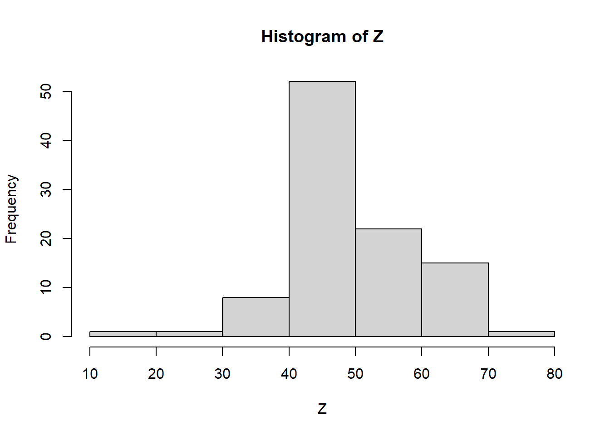

Week2 | Rによる自主勉強会
伊﨑 直志
2023年10月13日
準備
Loading Packages
library(tidyverse)
library(dplyr)
library(gridExtra)##
## 次のパッケージを付け加えます: 'gridExtra'## 以下のオブジェクトは 'package:dplyr' からマスクされています:
##
## combinewindowsFonts(family_sans = windowsFont("Noto Sans JP"))
par(family = "family_sans")
knitr::opts_chunk$set(echo = TRUE)第1章 回帰分析の目的
1.1. 相関と因果
相関関係 correlation：「Xが変化すればYも変化する」
因果関係 causality：「Xを変化させればYも変化する」
疑似相関 spurious correlation
「変数XとYに共通の第3の要因Zが存在することによってXとYに生じる見せかけの相関関係」
e.g. 個人所得の増加 →タバコへの支出増加、医療・健康への支出増加 ＝タバコと健康の疑似相関
- 時間的先行性: 原因となる現象が結果となる現象に時間的に先立って起きている。
- 共変関係（相関関係）: 原因となる現象が変動すると、結果となる現象も変動する。
- 他条件の同一性: 原因となる現象の双方に与える現象は存在しないか、その影響は統制されている。
1.2. 回帰と予測
一次関数 \(y=a+bx\) の形で表現 →最小二乗法（least squares estimation）（図1.1 →図1.6）
回帰直線、回帰式、回帰係数
回帰式の一方の変数に代入してもう一方の変数の値を計算、予測
ある変数Xの値をもとにして、他の変数Yの値を予測 ＝回帰分析
X：説明変数、Y：被説明変数⇒因果解釈ではなく、あくまで予測解釈！
回帰分析 →Xが与えられた時のYの値の予測
1.3. 自然科学のデータと社会科学のデータ
実験の難しさ（費用等コスト、倫理）
⇔自然科学：変数選択の制約・影響少、実験室実験可（変数統制） [従来的説明]
→現在、社会科学における実験多数：実験経済学等 or 自然実験…（後述）
第2章 統計の基礎知識
2.1. 母集団と標本
（有限集団全体）母集団－（抽出）標本
（確率分布）母集団－（観測値）標本 （←本書）
正規分布 normal distribution
正規分布\(N(平均, 分散=標準偏差^2)\)
正規分布（乱数）: rnorm(個数, 平均, 標準偏差)
rnorm(100, 50, 10) ## [1] 57.47935 33.92727 66.08958 53.48566 51.10643 45.89492 39.77603 47.88600
## [9] 45.02327 48.46771 50.35484 51.47453 51.41173 48.89529 54.55573 49.08913
## [17] 63.68417 71.81139 66.99552 39.34356 69.70792 66.20237 50.82887 49.51295
## [25] 57.39438 64.12807 51.59333 57.89031 51.09720 59.23024 39.04719 51.25967
## [33] 58.02407 63.58859 39.01946 53.75074 36.70879 39.21887 51.38577 73.76739
## [41] 51.48578 45.90752 62.32233 52.19054 49.96722 54.08976 62.09178 42.09690
## [49] 47.01042 53.11520 61.80992 36.57006 32.97446 47.65510 58.62255 49.99107
## [57] 31.99020 57.72808 52.36597 50.13815 54.93188 67.51094 47.87933 59.76928
## [65] 37.87660 55.14552 47.59469 31.17131 41.54582 60.64068 32.41367 64.98570
## [73] 29.28255 44.82684 54.88448 59.25999 41.86105 35.89594 39.19603 34.18252
## [81] 72.19487 49.68483 49.39441 48.84070 56.50790 59.21712 66.20252 47.70809
## [89] 51.07510 55.88239 40.52117 51.16825 44.46064 56.04741 47.51104 43.88857
## [97] 44.12955 54.61166 62.22249 52.21157curve(dnorm(x, 50, 10), 0, 100) #正規分布のグラフ描画
pnorm(60, 50, 10) #大きさ１の標本の値が60より小さくなる確率## [1] 0.8413447| 命令 | 説明 | （英略） |
|---|---|---|
rnorm(n, a, b) |
平均a, 標準偏差bの正規分布乱数をn個発生させる。 | random+norm |
dnorm(x, a, b) |
平均a, 標準偏差bの正規分布について, 密度関数の点xにおける値を計算する。 | density+norm |
pnorm(x, a, b) |
平均a, 標準偏差bの正規分布について, 分布関数の点xにおける値を計算する。 | probability+norm |
正規分布グラフ 描画関数
curve(dnorm(x, a, b), min, max) #curve(関数の式,
横軸の最小値, 横軸の最大値)
2.2. 無作為抽出
母集団から標本を抽出（random sampling）
rnorm(100, 50, 10)## [1] 48.19562 42.64822 56.68299 44.63645 44.30691 67.61286 50.12528 42.44563
## [9] 53.14374 41.45245 52.03641 46.58827 53.84269 61.35116 59.80556 45.45882
## [17] 48.92565 54.93277 63.78712 45.59974 68.36352 39.50051 63.31667 67.26741
## [25] 56.83511 61.49111 57.01200 40.60309 49.61076 61.05026 57.90494 44.30395
## [33] 60.49385 42.15397 53.15280 49.00283 43.90725 54.39333 57.71380 45.79999
## [41] 43.15413 41.65405 54.87148 36.67191 52.51605 46.84891 51.05330 60.66058
## [49] 27.85192 42.98288 47.76455 46.36220 73.84516 60.05453 45.79790 58.12286
## [57] 43.52238 41.22138 60.95743 39.80536 39.32828 48.29767 28.49014 77.35394
## [65] 52.94960 71.78094 66.49828 62.24733 49.71529 52.83828 45.86300 54.39537
## [73] 52.13772 56.27740 50.45165 36.34227 63.51512 40.44685 58.33361 56.68387
## [81] 44.10664 68.58796 68.42267 52.19331 47.07818 30.13962 66.84976 65.42412
## [89] 42.12956 48.98574 39.68955 53.80617 64.70940 51.14155 45.22987 53.03636
## [97] 54.26252 50.94790 47.63304 49.64447Z <- rnorm(100, 50, 10)
Z## [1] 33.07586 43.02329 46.02199 49.11968 43.84973 41.58446 35.10350 54.28321
## [9] 52.31286 45.85266 26.77683 61.23768 52.18801 60.85015 57.75905 45.30960
## [17] 61.63162 52.18447 47.20526 51.16442 67.60216 65.45859 42.94895 43.51939
## [25] 63.84240 50.83880 30.50021 36.00402 57.94872 44.67327 45.04095 57.24231
## [33] 51.28468 60.73244 36.84464 46.81876 34.49336 35.59810 41.19832 55.82034
## [41] 51.29850 52.61602 75.89094 55.85259 55.88294 45.88255 57.33789 51.30382
## [49] 55.54380 49.44151 47.27663 49.74568 36.98769 26.27699 34.78496 54.36143
## [57] 49.33448 63.48778 51.87352 71.04595 30.83259 32.25307 50.75488 49.92422
## [65] 58.13143 63.32264 55.84695 60.17630 58.60048 40.97444 56.40885 53.85736
## [73] 63.55592 39.96413 45.34434 47.67133 31.57970 45.39311 50.46699 45.94474
## [81] 43.99135 51.64222 56.26227 68.45515 43.43462 33.66428 57.39835 33.51924
## [89] 51.00281 59.23369 63.39515 60.09255 52.04367 43.31757 49.29859 46.72007
## [97] 58.19286 43.61717 54.35414 35.90205hist(Z) #ヒストグラム
Z[1:10] #最初の10個のデータを抜き出し## [1] 33.07586 43.02329 46.02199 49.11968 43.84973 41.58446 35.10350 54.28321
## [9] 52.31286 45.85266a <- c(5, 10, 100)
Z[a] #5番目,10番目,100番目の位置にある数字を抜き出し## [1] 43.84973 45.85266 35.90205Z[c(5, 10, 100)] #aを使わずに同上の操作## [1] 43.84973 45.85266 35.90205#特定の意味を持つ数値を抽出
max(Z) #最大値## [1] 75.89094which.max(Z) #最大値の位置## [1] 43min(Z) #最小値## [1] 26.27699which.min(Z) #最小値の位置## [1] 54mean(Z) #平均値## [1] 49.51712summary(Z) #基本統計量を一括表示## Min. 1st Qu. Median Mean 3rd Qu. Max.
## 26.28 43.50 50.61 49.52 56.62 75.891:10## [1] 1 2 3 4 5 6 7 8 9 10sample(1:10, 3) #無作為抽出、sample(範囲, 抽出個数)## [1] 10 6 7sample(Z, 5) #sample(標本, 抽出個数)## [1] 49.29859 47.27663 31.57970 51.28468 33.07586sample(Z, 5) #sample(標本, 抽出個数)## [1] 45.94474 75.89094 68.45515 67.60216 46.02199fruits <- c("ミカン", "バナナ", "リンゴ", "レモン", "モモ")
fruits## [1] "ミカン" "バナナ" "リンゴ" "レモン" "モモ"sample(fruits, 1) #fruitsから1個抽出## [1] "ミカン"sample(fruits, 2) #fruitsから2個抽出## [1] "リンゴ" "モモ"sample(fruits, 1) #fruitsから1個抽出## [1] "バナナ"sample(fruits, 1) #fruitsから1個抽出## [1] "リンゴ"コイン投げ1
coin <- c("Head", "Tail")
#sample(coin, 5) #うまくいかない ∵非復元抽出になっている
sample(coin, 5, replace = TRUE) #復元抽出, replace=TRUE## [1] "Head" "Tail" "Head" "Tail" "Tail"2.3. 平均と大数の法則
- ①ベクトルrecのi番目の場所rec[i]に
- ②母集団N(50,10^2)から抜き出した大きさ100の標本の平均を格納する
Rにおけるfor ループ（繰返処理）
for (アイテム in シーケンス) {アイテムを用いたオペレーションの指示}
出典: 16 ループと反復処理・リストの操作 | 疫学のための R ハンドブック
mean(Z) #標本平均## [1] 49.51712mean(rnorm(100, 50, 10))## [1] 50.55802mean(rnorm(100, 50, 10)) #Z <- rnorm(100, 50, 10)## [1] 50.22479#より多い試行、抽出1000回、標本の大きさ100
S <- 1000
rec1 <- numeric(S)
for(i in 1:S){
rec1[i]<-mean(rnorm(100, 50, 10))
}
rec1## [1] 51.38221 49.63992 50.02162 49.55831 48.90331 49.69787 49.80032 51.09044
## [9] 49.58448 50.32127 50.07834 50.79198 48.71766 49.81398 51.39948 50.68757
## [17] 48.91050 50.97664 49.37254 48.85162 47.71289 49.59767 50.43112 49.42233
## [25] 50.39276 49.83820 50.47186 50.21797 49.30363 49.77746 50.60937 50.97755
## [33] 49.81194 47.25408 49.71990 49.23205 49.94964 50.59507 48.91800 50.03792
## [41] 52.64028 50.02470 50.36161 49.46166 48.99233 49.74234 50.34971 50.68793
## [49] 49.43834 50.05054 51.82084 50.17709 49.39269 50.75336 49.16876 51.82009
## [57] 48.48394 50.10676 49.36323 50.12632 50.27613 49.35407 49.62759 51.90471
## [65] 51.43994 49.90270 50.60621 50.04831 51.57042 50.30272 51.01646 49.05872
## [73] 51.85735 50.68624 50.07317 50.58686 50.39500 50.90866 51.19881 49.53796
## [81] 50.36919 50.43081 50.27822 49.09141 49.73571 49.37210 50.12938 48.67451
## [89] 49.01047 52.24929 51.08170 49.92469 50.11165 51.18162 49.49983 50.73488
## [97] 49.37959 49.96661 48.46981 48.61434 50.20205 49.74799 48.54862 48.60700
## [105] 51.01362 50.88666 51.13877 51.05724 51.01635 50.45574 51.33254 50.24997
## [113] 50.86129 50.31784 50.28304 49.42780 48.37776 52.80944 50.43630 49.85093
## [121] 48.39550 48.51919 49.59060 49.95356 51.24892 50.62968 51.20562 49.23215
## [129] 51.18903 49.97814 49.17805 49.40847 48.90670 50.22509 48.70802 51.17490
## [137] 50.28183 50.10602 48.04474 52.26983 49.47193 49.76892 49.88539 49.53382
## [145] 50.54785 49.07374 49.60831 48.66739 51.23322 50.83105 50.32960 50.05896
## [153] 48.89468 51.06993 49.49073 49.58416 47.48107 50.54549 49.58239 49.38389
## [161] 51.00884 48.80895 50.62147 50.27965 48.66600 50.62933 50.62895 48.44811
## [169] 50.41273 51.35487 49.77451 48.76245 50.13406 48.23702 50.12750 51.13287
## [177] 48.76667 50.46108 48.64121 51.60511 50.90292 49.37573 48.74023 51.18291
## [185] 50.10533 49.72405 50.56857 51.46427 48.87652 50.33670 47.81008 50.21659
## [193] 48.56677 48.76403 50.40502 51.24155 49.87691 49.81564 51.32656 51.68668
## [201] 50.75521 50.71145 48.87637 49.84187 50.86682 52.38855 50.39486 49.70649
## [209] 48.66456 49.88934 48.67460 50.74089 51.81313 47.05520 48.39002 48.79585
## [217] 49.12431 50.84083 50.23945 49.82877 50.54520 49.34323 49.06931 50.51084
## [225] 48.64682 50.26766 50.64144 51.37436 51.64742 50.37018 47.47890 48.59497
## [233] 48.58564 50.77496 50.09502 48.47437 50.27413 50.34973 49.81668 50.44627
## [241] 52.01384 49.90328 50.53955 50.09284 48.72162 49.99854 49.27696 49.26305
## [249] 50.13770 48.57613 51.38374 49.42815 50.18772 49.80514 46.73784 48.64352
## [257] 50.85142 48.60062 49.90066 50.06053 48.96146 49.57180 50.00951 50.40729
## [265] 51.31220 49.94691 50.56629 51.79230 50.18019 49.89860 51.02041 50.71131
## [273] 51.36748 51.25329 49.61343 49.92397 49.90956 49.13593 48.97933 49.05808
## [281] 51.43020 52.94648 52.13179 48.68036 50.04684 50.65126 49.66021 50.29440
## [289] 50.10491 51.06974 50.38478 49.66111 50.39457 49.05388 48.53221 49.08132
## [297] 49.75755 49.77588 50.92511 51.15966 50.03909 49.79007 49.09859 50.35273
## [305] 50.13254 51.13256 49.29230 51.23744 49.89214 49.29324 50.31673 50.12943
## [313] 49.38378 50.91235 49.12927 49.32381 47.81945 51.34521 49.95669 51.03145
## [321] 50.41396 51.79546 48.34280 50.81973 49.17455 49.99590 49.41089 50.36862
## [329] 48.23888 50.58629 47.85455 50.18195 50.74456 49.64995 50.41215 48.91943
## [337] 51.38119 50.29634 49.39968 51.11233 51.19068 49.62719 50.42438 49.81017
## [345] 48.51811 50.06278 52.16487 49.53028 50.57009 48.18173 48.72398 49.55778
## [353] 50.80594 49.02215 50.75884 50.24803 50.58811 49.38966 52.10247 50.26234
## [361] 50.20681 50.41979 48.56913 50.28513 48.30578 48.55926 49.41567 50.89301
## [369] 50.70605 49.73270 50.25252 50.48714 49.31044 51.13044 50.23282 48.43298
## [377] 49.87870 49.51994 49.95405 50.21631 49.25558 50.10956 50.14064 48.84522
## [385] 50.11996 49.72576 50.62735 50.67302 51.35530 50.86090 50.27074 49.09577
## [393] 50.99873 50.23284 50.20472 52.28123 47.78266 49.48380 50.45502 49.30175
## [401] 49.12167 49.34966 49.13802 51.25127 49.54998 50.09722 49.82253 52.14828
## [409] 51.22411 49.09001 49.88472 50.66650 49.76291 50.05810 50.58917 50.17249
## [417] 50.07255 50.24482 48.73302 48.81185 50.92290 49.70209 48.72110 51.45955
## [425] 50.46389 50.41619 50.41407 49.34340 48.44735 48.98095 49.94221 48.91617
## [433] 49.89594 50.98784 51.59608 49.67902 48.99961 49.12416 49.31047 49.75831
## [441] 49.73747 51.26449 50.59716 51.01110 49.83525 49.59964 50.35606 50.42449
## [449] 50.07486 49.71740 50.40301 47.56848 51.08712 50.36389 49.45077 47.33986
## [457] 51.01936 49.82844 50.57109 51.68235 49.85898 50.84613 48.29877 49.77709
## [465] 49.20066 50.02728 50.85381 48.58367 51.41146 49.69274 50.78838 51.51044
## [473] 50.22653 49.77882 50.34670 48.42951 49.26811 50.21389 51.27714 51.26684
## [481] 51.47436 51.05322 48.58792 51.41615 47.66381 50.44382 49.95374 49.53982
## [489] 50.69057 51.01346 48.38516 49.48412 50.69584 50.93833 50.24557 48.58341
## [497] 49.12600 50.34653 49.34483 48.51230 50.79380 49.74031 49.95990 50.09117
## [505] 50.25360 48.51852 48.95088 48.81313 48.99422 49.24937 50.83053 49.71830
## [513] 51.62488 49.64807 49.52826 50.06255 49.33933 50.38274 52.55126 49.55469
## [521] 50.92760 50.25721 50.64663 50.19591 50.10381 49.67155 49.87714 49.00395
## [529] 50.71397 49.69323 50.39634 50.33201 49.07326 50.98213 48.98952 51.84452
## [537] 49.90303 50.46903 48.52528 50.39406 50.22213 49.39502 50.71612 49.08184
## [545] 49.37570 50.07319 49.82992 49.83512 49.57056 50.32565 52.26136 49.95849
## [553] 50.77037 49.27636 50.03264 49.86295 49.12449 48.57441 48.58402 50.53147
## [561] 50.92487 51.20359 46.11663 50.64581 50.20478 48.08710 50.04969 49.70822
## [569] 50.38794 51.29582 49.55229 49.22740 51.40974 50.48783 51.23575 50.31043
## [577] 50.70634 51.88610 50.22306 50.47505 51.52388 49.17634 51.00141 50.07541
## [585] 49.57002 50.20715 47.75274 50.03417 50.15210 50.59888 50.17427 48.73073
## [593] 51.04595 50.35291 49.83222 49.49801 49.29654 50.13234 50.07565 50.06831
## [601] 51.44583 49.52693 50.13498 49.05140 47.31735 50.61566 50.65071 49.37221
## [609] 51.72452 52.30388 50.69055 50.16224 48.87007 49.78933 50.67487 52.59942
## [617] 49.55793 49.90224 50.15711 50.13777 50.47260 48.66530 48.60714 48.40608
## [625] 49.46476 50.84244 49.71280 49.55045 50.24849 49.25588 49.26160 51.38986
## [633] 50.41855 48.98560 49.29212 49.04036 50.70831 49.85744 49.65793 48.73879
## [641] 48.82475 50.22010 51.83534 49.73622 51.20282 50.81416 51.03866 49.50897
## [649] 49.13797 49.83092 49.60046 51.08013 48.41419 51.02204 50.08970 51.17511
## [657] 49.63679 49.17266 50.39754 50.32016 50.50898 50.22430 50.27739 50.41507
## [665] 49.45119 50.34320 48.98394 49.07142 50.89636 51.15205 50.24270 51.92553
## [673] 48.95159 49.80138 49.37119 50.16922 50.36528 52.36921 49.70559 50.46441
## [681] 49.64068 48.33834 50.24426 50.85830 48.74419 47.64356 51.38097 49.68887
## [689] 50.03449 51.08637 50.56481 51.91670 51.22004 51.46662 50.80870 48.89811
## [697] 50.31397 50.95049 51.68907 48.67575 49.50504 50.55608 49.73081 48.25315
## [705] 48.88510 49.81674 49.35780 50.64938 49.91748 52.00559 49.57016 50.85730
## [713] 49.09599 50.34592 50.42683 50.45778 49.39095 50.18420 50.61526 50.50835
## [721] 48.25716 48.87526 50.09193 49.48778 49.05626 49.80486 50.31919 50.23202
## [729] 48.98084 50.71074 51.39914 49.33045 51.36951 50.36480 50.01945 48.81741
## [737] 49.20027 50.44653 49.11594 52.52921 49.72379 51.62699 49.51791 49.31921
## [745] 50.22274 49.51402 50.32841 49.56812 50.08027 50.68871 50.84426 48.24972
## [753] 48.21790 50.00082 49.67674 51.22211 50.29152 51.47717 50.24669 49.90111
## [761] 49.54582 50.94513 49.96048 50.23834 49.42584 49.50041 50.23597 51.00776
## [769] 48.59187 51.58287 49.12974 49.56596 48.16657 49.96615 50.99782 50.69283
## [777] 49.79833 49.40145 50.34895 48.55034 51.27286 50.36514 48.70566 49.14643
## [785] 49.50403 51.50183 51.61097 49.70223 49.80184 49.68645 50.64296 50.35174
## [793] 51.01197 49.52715 50.19078 50.04794 53.08601 51.63741 49.92054 49.87375
## [801] 48.76460 48.48897 49.93605 50.26686 48.36438 46.77116 50.65927 50.56963
## [809] 52.80258 47.66559 51.00958 48.57683 50.60411 51.77476 49.56236 50.02125
## [817] 50.11518 49.82971 49.90182 49.09993 51.22414 48.32031 47.80258 49.49542
## [825] 51.42409 51.24127 47.91671 48.14206 49.15181 50.89966 50.88101 50.40406
## [833] 49.01626 51.56232 50.57414 49.51519 48.51258 48.81068 50.03745 51.53921
## [841] 51.27910 51.57166 49.45743 49.52102 50.16107 48.38284 50.12164 50.40962
## [849] 48.76786 50.07312 49.60108 53.26361 49.56677 49.47619 49.69145 47.60035
## [857] 50.50213 50.93663 51.23088 50.52428 49.68978 50.43793 50.14294 50.71185
## [865] 49.39974 52.19910 49.05231 50.06892 50.47233 51.03667 50.27359 49.97400
## [873] 49.91904 49.81245 49.77750 50.98695 47.98387 50.24488 48.64119 49.75411
## [881] 50.67789 50.32864 50.78361 51.08928 48.88638 51.34319 49.63776 49.94166
## [889] 48.61063 48.99479 49.71238 50.76192 49.98310 49.86390 51.45488 48.52846
## [897] 51.24194 50.45627 48.42134 50.10894 50.83094 49.84005 48.55763 49.51309
## [905] 49.44257 48.84115 50.48439 49.41899 49.97848 49.28637 53.03203 49.66222
## [913] 49.15933 51.15647 51.06727 49.53441 51.10897 50.96680 50.13260 49.28361
## [921] 48.65333 47.75093 49.70714 50.28774 48.83038 50.61305 49.28534 50.17088
## [929] 50.42072 49.78024 50.71460 49.92728 49.00813 49.92152 49.42553 48.45748
## [937] 49.15564 50.52030 50.17995 51.34782 50.00126 50.20906 50.50739 50.88205
## [945] 50.49513 50.24311 50.49923 51.98014 51.01765 50.77135 52.17596 49.96394
## [953] 50.55604 49.93672 49.36278 49.87236 48.72275 48.61042 49.24860 49.87365
## [961] 50.82781 49.49297 49.01367 51.48586 49.10433 50.23575 48.70877 50.03362
## [969] 49.57377 50.06825 48.18255 50.48307 49.35689 49.76386 49.39758 50.27195
## [977] 49.20888 49.12866 49.71769 49.78439 50.75636 49.26356 48.77949 51.75597
## [985] 50.55936 51.11234 49.47177 49.84431 49.16306 52.65589 49.23344 50.48438
## [993] 48.41704 50.57406 49.23468 48.67974 48.22901 48.64757 50.48495 50.18497hist(rec1, main = "n = 100") #main = "n = 100", ラベル
summary(rec1)## Min. 1st Qu. Median Mean 3rd Qu. Max.
## 46.12 49.36 50.05 50.00 50.63 53.26【大数の法則】
母集団から無作為に抜き出された標本の平均値は、標本の大きさが大きいほど、母集団平均に近い値をとる。
サイコロ：母集団平均3.5
\(1*1/6+2*1/6+3*1/6+4*1/6+5*1/6+6*1/6=3.5\)
⇒大数の法則をスクリプトで確認
sample(1:6, 10, replace = TRUE) #サイコロを10回振る試行## [1] 3 3 3 3 3 6 2 1 4 5mean(sample(1:6, 1000, replace = TRUE)) #サイコロを1000回振った結果の目の平均値, 3.5に近似## [1] 3.499#サイコロ10回の標本平均×1000
S <- 1000
rec2 <- numeric(S)
for(i in 1:S){
rec2[i] <- mean(sample(1:6, 10, replace = TRUE))} #サイコロ10回の標本平均×1000
summary(rec2)## Min. 1st Qu. Median Mean 3rd Qu. Max.
## 2.100 3.100 3.500 3.487 3.900 5.000#サイコロ1000回の標本平均×1000
S <- 1000
rec3 <- numeric(S)
for(i in 1:S){
rec3[i]<-mean(sample(1:6, 1000, replace = TRUE))} #サイコロ1000回の標本平均×1000
summary(rec3)## Min. 1st Qu. Median Mean 3rd Qu. Max.
## 3.342 3.464 3.497 3.498 3.536 3.660#サイコロ10000回の標本平均×1000
S <- 1000
rec4 <- numeric(S)
for(i in 1:S){
rec4[i] <- mean(sample(1:6, 10000, replace = TRUE))} #サイコロ1000回の標本平均×10000
summary(rec4)## Min. 1st Qu. Median Mean 3rd Qu. Max.
## 3.431 3.488 3.500 3.499 3.510 3.5582.4. 分散と標準偏差
| 命令 | 説明 |
|---|---|
var() |
分散 |
sd() |
標準偏差 |
標本平均 →標本のちらばり
分散 variance 標本が平均値を中心にどれだけ散らばっているかを表す指標
標準偏差 standard deviaton 分散の平方根、標本が平均値を中心にどれだけ散らばっているかを表す指標（同上）
分散は、計算過程において２乗しているので観測データの単位と異なります。例えば観測データの単位がg（グラム）である場合、分散の単位はg2になります。そこで、分散の平方根である標準偏差を求めることによって、観測データとの単位を揃えることが出来ます。そうすることで、分散よりも扱いやすい値となります。
出典: 標準偏差の意味と求め方 | AVILEN AI Trend
#母集団N(50, 10^2)から大きさ1000の標本を無作為に抽出
x <- rnorm(1000, 50, 10)
var(x) #分散## [1] 100.4742sd(x) #標準偏差 #10に近似## [1] 10.02368#分散・標準偏差における大数の法則
#n = 1000
S <- 1000; n <- 1000
rec <- numeric(S)
for(i in 1:S){
rec[i]<-sd(rnorm(n, 50, 10))}
summary(rec) #標準偏差10に近似## Min. 1st Qu. Median Mean 3rd Qu. Max.
## 9.241 9.844 9.996 10.001 10.156 10.829#より大きいサイズで確認
#n = 10000
S <- 10000; n <- 10000
rec <- numeric(S)
for(i in 1:S){
rec[i]<-sd(rnorm(n, 50, 10))}
summary(rec) #より10に近似＝大数の法則## Min. 1st Qu. Median Mean 3rd Qu. Max.
## 9.753 9.952 9.999 9.999 10.047 10.2592.5. 相関係数と共分散
| 命令 | 説明 |
|---|---|
plot() |
散布図 |
cor() |
相関係数 |
cov() |
共分散 |
x <- rnorm(100, 50, 10)
y <- rnorm(100, 50, 10)
plot(x, y, main = "散布図(x, y)") #x,yの散布図
#xと関係のあるzを追加
z <- (x+y)/2
plot(x, z, main = "散布図(x,z)") #x,zの散布図
共分散: 2変数の関係の強さを表す指標の一つ。
〈手順〉
- それぞれの変数の平均値を求める
- それぞれの変数の偏差（数値 － 平均値）を求める
- 偏差の積の平均値（＝共分散）を計算する
ただし、データの単位の影響を受けるので値の大きさで単純に比較できない（データスケールに応じて変化してしまい、共分散の数値だけを見て関係性を判断することは難しい）
⇒ 正規化・標準化の必要＝相関係数
相関係数: 2つの確率変数間の線形関係の強さをはかる指標、
-1以上+1以下の値を取り、1に近づくほど正の相関、-1に近づくほど負の相関
x <- rnorm(100, 50, 10)
y <- rnorm(100, 50, 10)
plot(x, y, main = "散布図(x, y)") #x, yの散布図
z <- (x+y)/2 #xと関係のあるzを追加
plot(x, z, main = "散布図(x,z)") #x, zの散布図
相関係数
cor(x, y)## [1] 0.0262771cor(x, z)## [1] 0.7212495共分散
cov(x, y)## [1] 2.380235cov(x, z)## [1] 47.14312おまけ
x <- rnorm(100, 50, 10)
y <- rnorm(100, 50, 10)
par(family="family_sans")
plot(x, y, main = "散布図(x, y)") #x, yの散布図
z <- (x+y)/2 #xと関係のあるzを追加
plot(x, z, main = "散布図(x, z)") #x,zの散布図
library(ggplot2)
ggplot() +
geom_point(aes(x, y))+
labs(title="散布図(x, y)") +
theme_grey(base_family = "family_sans") +
theme(plot.title = element_text(hjust = 0.5))
ggplot() +
geom_point(aes(x, z)) +
labs(title="散布図(x, z)") +
theme_grey(base_family = "family_sans") +
theme(plot.title = element_text(hjust = 0.5))
ggplot() +
geom_point(aes(x, y)) +
labs(title="散布図(x, y)") +
theme_bw(base_family = "family_sans") +
theme(plot.title = element_text(hjust = 0.5))
ggplot() +
geom_point(aes(x, z)) +
labs(title = "散布図(x, z)") +
theme_bw(base_family = "family_sans") +
theme(plot.title = element_text(hjust = 0.5))
練習問題
問題2.1.
#2.1.1.
runif(100)## [1] 0.78752046 0.30433318 0.73585076 0.97795542 0.75938263 0.61080360
## [7] 0.40479963 0.67193806 0.70571833 0.93641507 0.36683188 0.87259339
## [13] 0.50359793 0.23838693 0.80745585 0.20553024 0.87123424 0.65334205
## [19] 0.39754522 0.33302062 0.71508361 0.35217004 0.62719439 0.94420684
## [25] 0.29284186 0.51256476 0.67300268 0.14433196 0.54324731 0.45138700
## [31] 0.03691073 0.21019399 0.58434564 0.07487578 0.08636750 0.47514072
## [37] 0.61635203 0.34180275 0.22143855 0.03369649 0.73170526 0.56272837
## [43] 0.77642877 0.18671536 0.97323890 0.13961545 0.79131511 0.16113732
## [49] 0.38573137 0.84169438 0.65856246 0.85933282 0.55779762 0.44397661
## [55] 0.52266348 0.47409794 0.06860934 0.76929297 0.36737350 0.30434169
## [61] 0.20069312 0.28212194 0.95140575 0.15745786 0.65653332 0.13859414
## [67] 0.66332162 0.87619326 0.13502996 0.95878507 0.91351328 0.28637794
## [73] 0.93239104 0.18467572 0.55683805 0.15618473 0.70636846 0.69707985
## [79] 0.04661588 0.73449620 0.34529090 0.76391951 0.04696617 0.38169322
## [85] 0.01464772 0.64896143 0.12104475 0.52543664 0.77658921 0.51165254
## [91] 0.25286256 0.86512839 0.58240930 0.27243354 0.61022910 0.13417166
## [97] 0.81338132 0.58648269 0.99784243 0.12810560#2.1.2.
P <- runif(100)
mean(P) #平均## [1] 0.502021var(P) #分散## [1] 0.0675703sd(P) #標準偏差## [1] 0.2599429#2.1.3.
S <- 1000; n = 100
recP <- numeric(S)
for(i in 1:S){
recP[i] <- mean(P)}
summary(recP)## Min. 1st Qu. Median Mean 3rd Qu. Max.
## 0.502 0.502 0.502 0.502 0.502 0.502#Re
x <- runif(100)
#2.1.2.
mean(x)## [1] 0.5611125var(x)## [1] 0.0815764sd(x)## [1] 0.2856158#2.1.3.
S <- 1000; n <- 1000
rec <- numeric(S)
for(i in 1:S){
rec[i] <- mean(runif(n))}
summary(rec)## Min. 1st Qu. Median Mean 3rd Qu. Max.
## 0.4756 0.4941 0.5001 0.5003 0.5063 0.5284問題2.2.
x <- runif(100)
y <- rnorm(100, 0, 1)
z <- 1.3*x-0.7*y
#2.2.1.
plot(x, y, main = "散布図(x, y)")
plot(x, z, main = "散布図(x, z)")
plot(y, z, main = "散布図(y, z)")
cor(x, y)## [1] -0.0768547cor(x, z)## [1] 0.5116005cor(y, z)## [1] -0.896001#2.2.2.
x <- runif(n)
y <- rnorm(n, 0, 1)
z <- 1.3*x-0.7*y
n = 10000
cor(x, y)## [1] 0.08120115cor(x, z)## [1] 0.4223719cor(y, z)## [1] -0.8691323par(mfrow = c(1,3))
plot(x, y, main = "散布図(x, y)")
plot(x, z, main = "散布図(x, z)")
plot(y, z, main = "散布図(y, z)")
w <- cbind(x, y, z)
cor(w)## x y z
## x 1.00000000 0.08120115 0.4223719
## y 0.08120115 1.00000000 -0.8691323
## z 0.42237187 -0.86913231 1.0000000#おまけ
library(ggplot2)
x <- runif(100)
y <- rnorm(100, 0, 1)
z <- 1.3*x-0.7*y
g1 <- ggplot() +
geom_point(aes(x, y)) +
labs(title = "散布図(x, y)") +
theme_bw(base_family = "family_sans") +
theme(plot.title = element_text(hjust = 0.5))
g2 <- ggplot() +
geom_point(aes(x, z)) +
labs(title = "散布図(x, z)") +
theme_bw(base_family = "family_sans") +
theme(plot.title = element_text(hjust = 0.5))
g3 <- ggplot() +
geom_point(aes(y, z)) +
labs(title = "散布図(y, z)") +
theme_bw(base_family = "family_sans") +
theme(plot.title = element_text(hjust = 0.5))
grid.arrange(g1, g2, g3, ncol = 3)
筒井淳也『数字のセンスを磨く データの読み方・活かし方』（2023年, 光文社）の第4章を参照のこと。↩︎